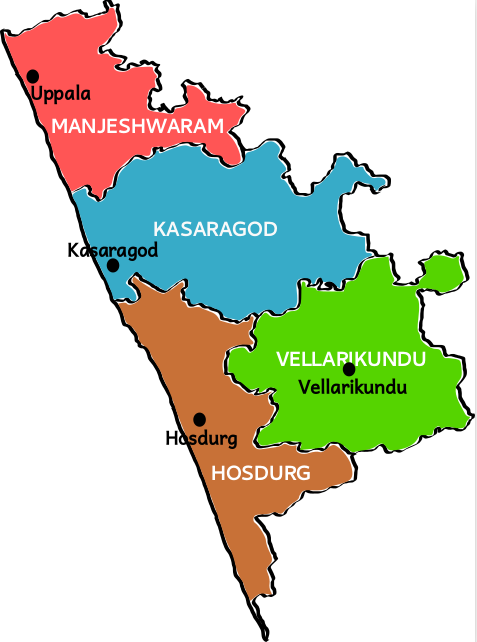

The northernmost district of Kerala, Kasaragod is renowned for its hills, forts and water bodies. The coir and handloom industry here are extremely famous around the world. The place is also popular for its ancient temples and rich biodiversity. It is an important border district as well that regulates trade with a lot of neighbouring States. Legends regarding the district greet you at every turn on a visit here. A trip here is incomplete without visiting Bekal Fort, the most majestic and well maintained fort in South India. We can say that Kasaragod is the crown of the state Kerala, Land of many differnt languages, the history of the invasion and resistance, testimonies of historical forts, remainings of innovative culture of the modern stone age like ‘Chenkallarakal’, ‘Nannangatikal’, ‘Muniyarakal’, Inscriptions of historical rulers and their practices, Lush green land of highlands of western ghat, the midlands, the unique traditions and practice of worship. Kasargod is reputed for its practice of sharing the culture and languages.

By road: An excellent network of roads connects Kasaragod to major towns in Kerala, Karnataka and Tamil Nadu.
Kasaragod KSRTC Bus Station, Ph: 4225677
By rail: Kasaragod Railway Station situated on the Kozhikode-Mangalore-Mumbai route.
Ph: 220800, Enquiry: Ph: 230200
By air: Mangalore (69 km), Calicut International Airport, Kozhikode (200 km)